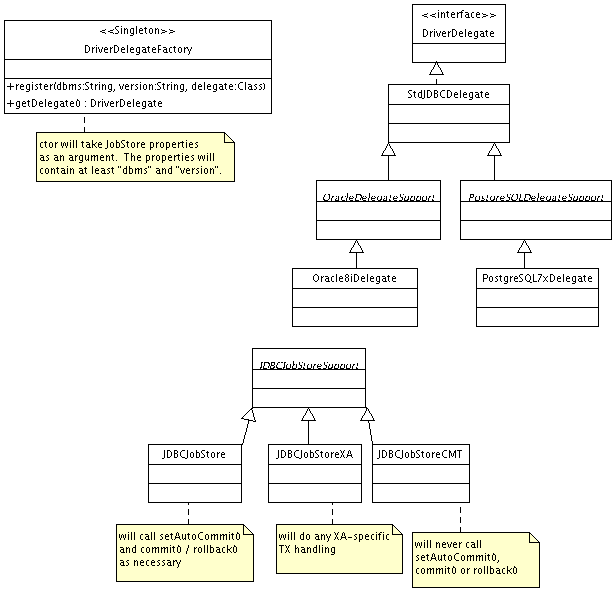
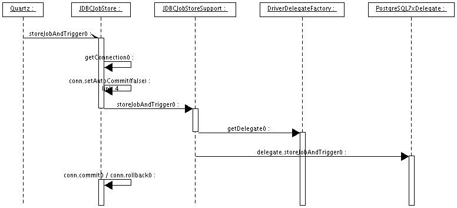

It seems that the time is overdue for a rewrite of the JDBCJobStore persistence mechanism. Reasons:
This document is meant to provide a high-level design of a new approach for the JDBC-based persistence engine.

Below is the sequence diagram for the execution of the
storeJobAndTrigger() method with a configuration of:
jobStore.class = org.quartz.impl.JDBCJobStore
jobStore.dbms.type = PostgreSQL
jobStore.dbms.version = 7.2.1
Other persistence operations and job store configurations would have similar sequence diagrams. One could visualize the sequence diagram for JDBCJobStoreCMT on Oracle 8i as being the same without the setAutoCommit() / commit() / rollback() calls, and with the Oracle8iDelegate instead of the PostgreSQL7xDelegate.
